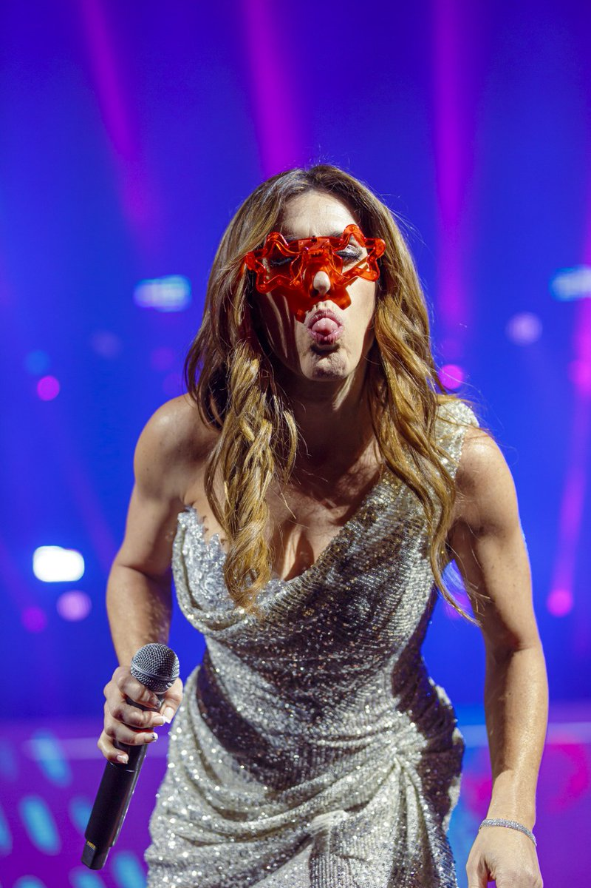

Parte de mi
Parte de mí es el décimo séptimo álbum de la cantante Soledad Pastorutti lanzado el 20 de septiembre de 2020. Producido por Carlos Vives, Cheche Alara, Juan Blas Caballero, Rodolfo Lugo e Ivan Miyazato.
Cosquin 2021
El cierre de la octava luna llegó con la santafesina embalada para seguir cantando, al punto de que buena parte del público que había colmado la plaza comenzó a retirarse tarareando algunas de las canciones del tramo final de un show exhaustivo, que no dejó tramo de la carrera de Pastorutti sin revisar.

Jesus Maria 2021
La Sole recuerda también aquella Noche joven de hace 25 años en la que compartió escenario con Los nocheros y le cuenta al público cuan distinto era todo: “Hacíamos dos salidas: una primera para la televisión y después volvíamos”